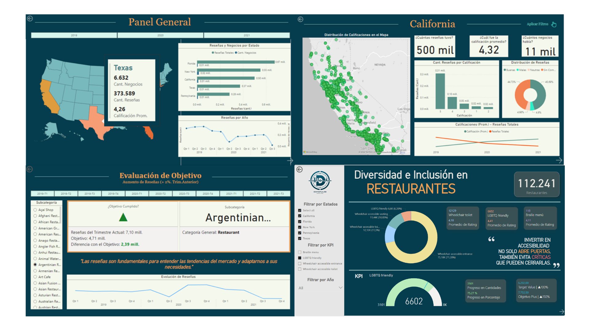
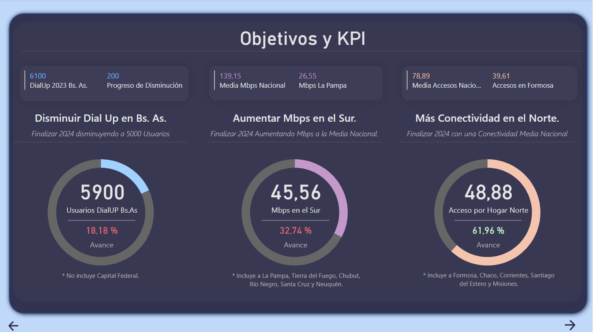
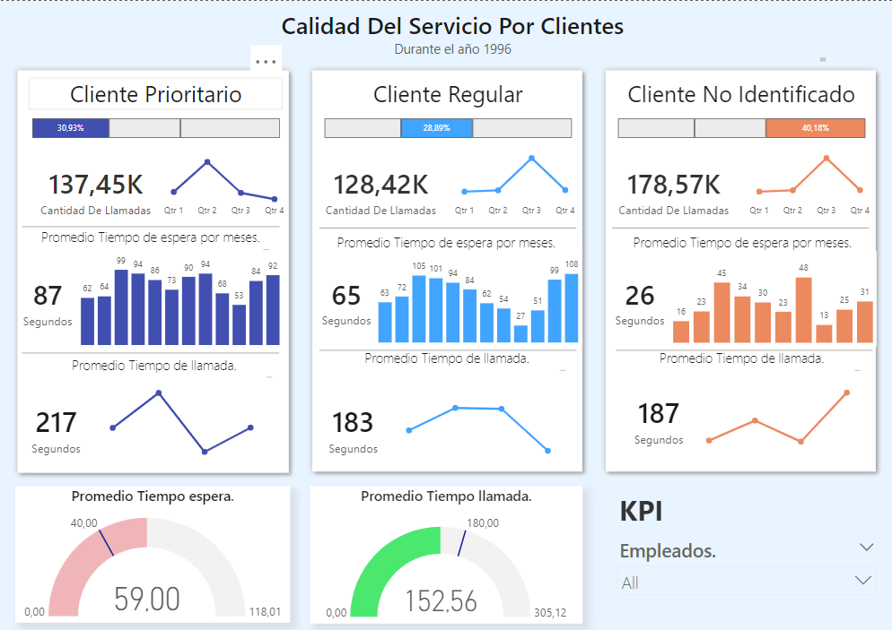
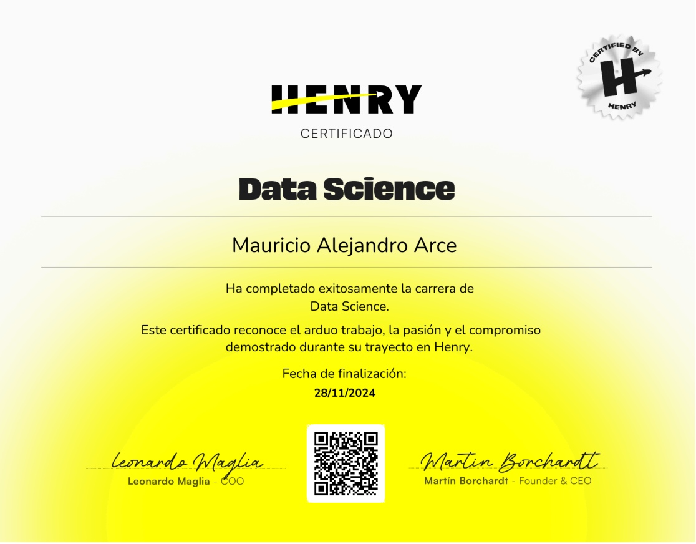
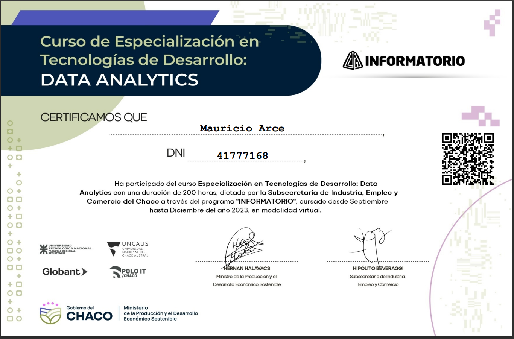

Ingeniero y Analista de Datos con background en economía y finanzas, lo que me permite analizar datos con un enfoque orientado al negocio. Cuento con experiencia en Big Data con PySpark, machine learning y procesamiento de lenguaje natural (NLP), aplicando técnicas avanzadas para resolver problemas complejos y extraer insights accionables. Tengo habilidades sólidas en estructura y modelado de datos, desarrollo de pipelines ETL, así como en almacenamiento y gestión de datos en la nube con especialización en Google Cloud Platform (GCP). Poseo experiencia en orquestación de datos utilizando Airflow y generación de reportes interactivos con herramientas como Power BI y Looker Studio. Además, domino SQL, Python y Pandas, con más de 2 años de experiencia práctica.
En el ámbito colaborativo, destaco por mi capacidad de resolución de problemas complejos, adaptabilidad para aprender rápidamente nuevas tecnologías y metodologías, y comunicación efectiva para traducir resultados técnicos en insights claros para la toma de decisiones. También he desarrollado competencias para el trabajo en equipo con herramientas como Git, Slack, LucidChart y Trello.
Proyectos recientes

DataPulse: Reseñas y Recomendaciones.
Trabajé en la implementación de un pipeline ETL automatizado en la nube de Google Cloud para procesar datos de reseñas de GoogleMaps, incluyendo su extracción, limpieza y modelado de Base de datos. Diseñé y optimicé un modelo de análisis de sentimiento, y desarrollé un dashboard interactivo para visualizar resultados clave y facilitar la toma de decisiones en el sector de restaurantes en Estados Unidos.
#Airflow #BigQuery #Composer #SentimentAnalysis #StorytellingVisual #PowerBI #DAX #Cloud Storage #ETL #EDA #KPIs

ENACOM Internet Argentina
Trabajé en el análisis del comportamiento de servicios de internet en Argentina a nivel nacional, recopilando información de diversas fuentes, incluyendo INDEC.
Realicé un análisis exploratorio de datos (EDA) para identificar tendencias y patrones en el uso de tecnologías y velocidades de conexión, mejorando la calidad del análisis en un 70% en términos de precisión y comprensión.
Además, desarrollé KPIs y métricas personalizadas utilizando DAX, diseñando un storytelling visual con Power BI para facilitar decisiones basadas en datos.
#EDA #StorytellingVisual #ETL #PowerBI #DAX #Pandas #Python #PowerQuery #Excel #KPIs

API Modelo de recomendación de peliculas
Desarrollé una API para recomendar películas basada en similitudes del coseno y técnicas avanzadas de procesamiento de lenguaje natural (NLP).
Implementé un pipeline de procesamiento de texto que incluye normalización, lematización, expresiones regulares stopwords y vectores TF-IDF para optimizar la preparación de datos textuales y mejorar la precisión de las recomendaciones.
Utilicé el formato Parquet para optimizar el almacenamiento, reduciendo significativamente el espacio requerido y acelerando el procesamiento.
Desplegué la API con FastAPI, consumida por una interfaz web en Render, ofreciendo recomendaciones en tiempo real con información detallada de películas y actores.
#NLP #TFIDF #FastAPI #Scikit-Learn #TruncatedSVD #Render #RecomendadorDePelículas #Parquet #MachineLearning

Analisis de Atención y Servicio en Call Centers.
Diseñé y desarrollé un dashboard interactivo orientado a medir y evaluar los niveles de calidad de servicio, eficiencia y productividad en un Call Center.
El proyecto incluyó la integración y limpieza de datos operativos, el desarrollo de KPIs personalizados para evaluar desempeño, y la implementación de un storytelling visual en Power BI para ofrecer una visión clara y accionable.
Este dashboard permite a los gestores identificar áreas de mejora y optimizar la experiencia del cliente, mejorando las decisiones estratégicas y operativas.
#PowerBI #KPIs #DataVisualization #CallCenter #StorytellingVisual
Certificaciones

Data Science - Henry - Nov24
#SQL #GCP #PowerBI #MachineLearning #Python #BigData #NoSQL
Data Analysis with Python - FreeCodeCamp - Feb24
#EDA #Python #NumPy #Seaborn #MatplotLib #Scikit-Learn

Data Analytics - Informatorio Chaco - Dic23
#DataLakes #DataWarehouses #SQL #Flask #API #Python #BigData
Desarrollo Web con Python - Informatorio Chaco -
#Python #Django #SQL #Git #POO #Backend
Contactame y hagamos la diferencia.
¿Tienes un proyecto en mente o necesitas ayuda para convertir tus datos en decisiones accionables?
¡Hablemos! Estoy disponible para colaborar en proyectos desafiantes y crear soluciones basadas en datos que marquen la diferencia.

{kind=link}
{kind=link}
{kind=link}
{kind=link}
{kind=link}